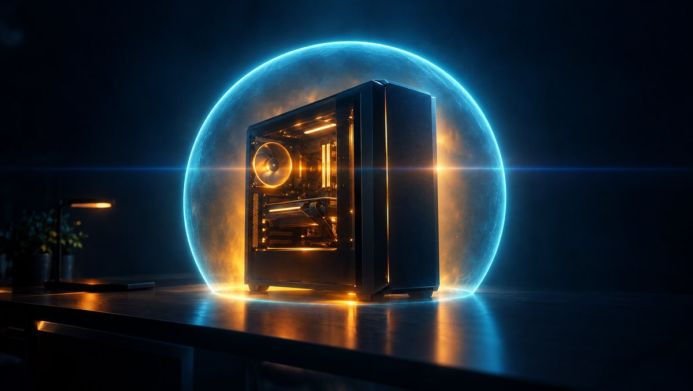

Give it a voice from a short clip and a personality in plain words. It hears everyone, learns their names, answers when someone talks to it, and stays out of the way when they don't.
Free. No account. No hidden API keys. Requires an NVIDIA GPU.
ATLAS is built around one loop: set it up once, then make agents, take them into calls, and review what happened.
The first-run wizard checks your GPU, installs or finds Ollama, picks a model that fits, or connects your own cloud provider.
Import a voice clip you have the rights to, describe a personality, let ATLAS draft the rest, edit and save.
Route your call audio in and the agent's voice out. Mute, quiet mode and a talkativeness slider are one click away.
After the call: who it talked to, when it held back, what it said. Approve what it should remember. Clear anything you don't want kept.
Most voice bots answer everything. ATLAS tracks who is speaking, decides whether a line is meant for it, and holds back when it isn't. It learns names from introductions instead of calling people "Speaker 3".
| Measured on Qwen3 14B | |
|---|---|
| Interrupted when not addressed | 0 times |
| Missed when addressed | 0 times |
| Requests completed | 12 of 12 |
| Replies in its own words | 29 of 30 |
From the turn-taking and request benchmarks in the repo. An 8B model also works, with 3 of 12 misses.
Each agent has its own long-term memory: a graph of what was said that strengthens links it uses and lets the rest fade. Relevant memories come back on their own. The search starts while people are still talking, so it adds almost no delay.
Phone numbers, emails, addresses and keys are never stored.
Agents never see each other's memories.
Review what it proposes to remember after each call.
Last hour, 12 hours, day, week or everything, per agent.
Speech recognition and the voice run on your graphics card. The language model can too, through Ollama. If you prefer a cloud model, paste your own key for any OpenAI-compatible provider; it's encrypted on disk and never sent anywhere else.

| GPU | NVIDIA, required. The voice engine is CUDA-only. |
| Fully local | 12 GB VRAM minimum (8B model), 16 GB+ recommended (14B). |
| With a cloud model | About 8 GB VRAM for speech and voice. |
| OS | Windows 10/11 or Ubuntu 22.04+. No macOS yet. |
| Installer | Not code-signed yet, so Windows SmartScreen will warn. Checksums are on every release. |
Free and open source. Bring your own voice, your own personality, your own model.
Only use voices you have the rights to.